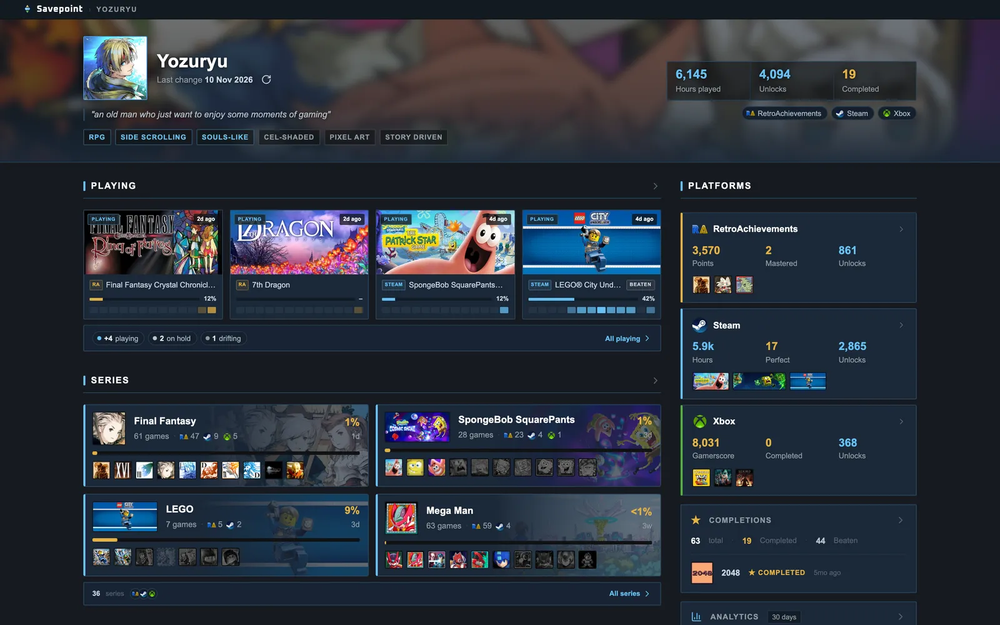
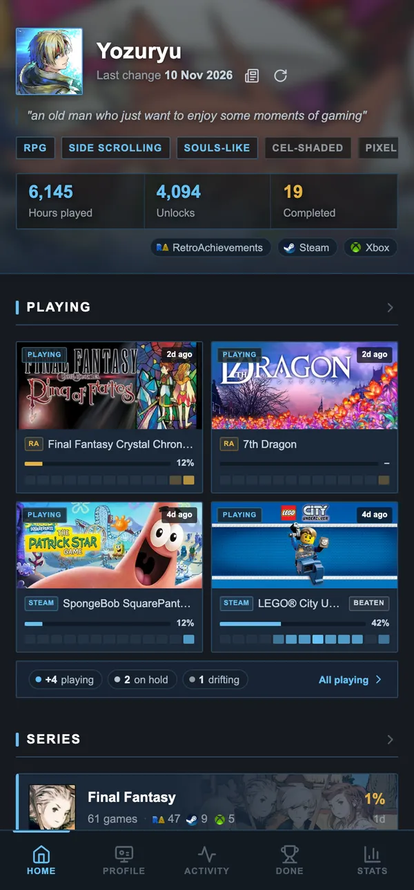
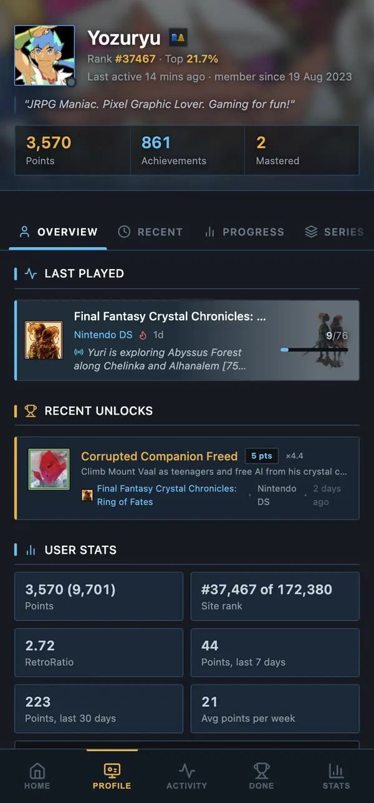
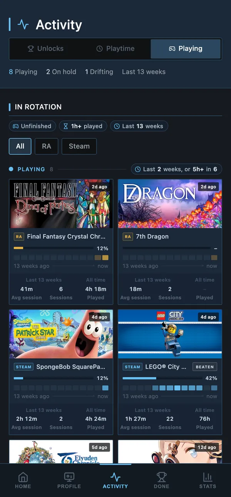
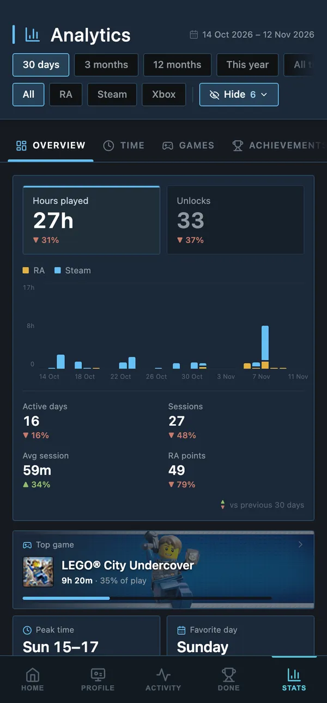
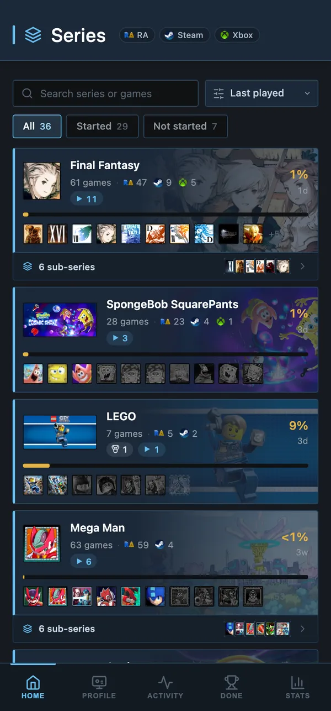
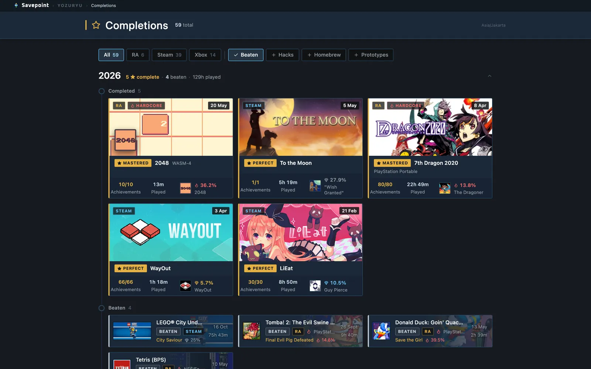

Hub
Every platform on one screen
The games in rotation, your series, the latest unlocks and each platform's headline numbers.
Savepoint gathers your RetroAchievements, Steam and Xbox achievements, playtime and completions into one site that updates itself every hour, hosted free on your own GitHub.


Built for your phone first, and roomy on a big screen. Every page reads your own data, refreshed every hour.
The games in rotation, your series, the latest unlocks and each platform's headline numbers.
Every game, achievement and rarity, with tabs for progress and series.

Sessions from your playtime, unlocks day by day, the games in rotation.

Any period against the one before: hours, peak times, top games.

Group games into series and sub-series, with progress for each.

Every finished game from every platform on one timeline, with its rarest achievement.

Edit series, pick art, set win conditions, start data runs and publish. Never deployed.

Fresh data every hour from GitHub Actions, or every 30 minutes with a free external cron.
Hosted on GitHub Pages. No server, no database, no account anywhere else.
Install it on your phone from the browser; it opens full screen and works offline.
This is the author's own Savepoint, running live. Tap around: open a game, switch tabs, scroll the activity.
Everything runs on free GitHub features. Your keys stay in encrypted secrets; the site is plain files that read your data.
RetroAchievements, Steam and OpenXBL keys go into your repository's Actions secrets.
Every hour it fetches your profiles and commits only what changed to a data branch.
When data changed, the site is deployed with it. Free for public repositories.
Open it anywhere, or install it as an app. It refreshes itself in the background.
All in the browser, nothing to install. The docs walk you through each step and fill in your own names as you go.
savepointconfig.json
Free, open source and yours: the code, the data and the address.